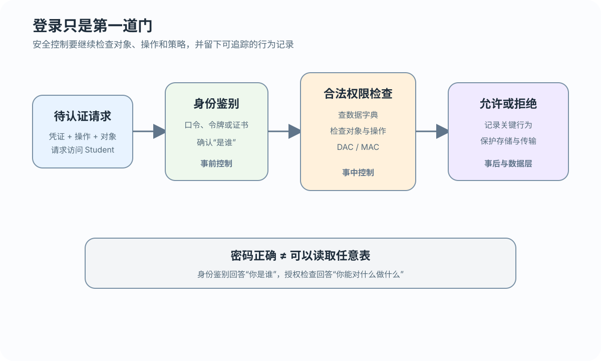
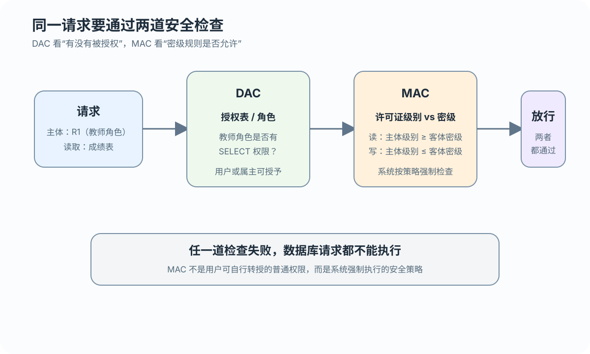

事前
确认身份并发现异常请求
让正确的人在正确的边界内访问数据
 VER. 2608.2
Built with impress.js
VER. 2608.2
Built with impress.js
数据库安全控制从身份鉴别开始，经过授权和强制策略检查，并留下可追踪记录
集中存储与多人共享让安全边界更加重要
| 威胁 | 可能后果 | 首要问题 |
|---|---|---|
| 非授权访问 | 读取、修改或破坏数据 | 谁在请求 |
| 敏感数据泄露 | 机密字段被暴露 | 哪些数据可见 |
| 运行环境脆弱 | 操作系统、网络或硬件不可信 | 承载系统是否可信 |
| 应用层漏洞（跨层案例） | 输入被拼接成非授权 SQL | 应用是否正确处理输入 |
安全性关注能否合法使用；完整性关注数据是否符合规则；运行环境安全关注承载系统是否可信，应用层漏洞不等于完整性约束
等级不是“产品自动安全”的承诺
TCSEC/TDI 主要描述安全保护要求；CC EAL 主要描述评估保证程度，二者不是同一条等级轴，历史对应只作近似理解
| 标准或等级 | 重点 | 课堂理解 |
|---|---|---|
| TCSEC/TDI D | 最小保护 | 不满足更高要求的归类 |
| C1 | 自主安全保护、DAC | 允许按对象和用户配置权限 |
| C2 | 受控存取、个人责任与审计 | 在 DAC 基础上强化可追踪性 |
| B1、B2、B3 | 标记、结构化保护、安全域 | 引入更强的强制策略 |
| A1 | 验证设计 | 对设计与实现提供形式化保证 |
| CC EAL1—EAL7 | 评估保证级 | 关注评估和保证程度 |
标准定义把“身份、授权、标记、审计、验证”串成逐层增强的保护链
登录通过不等于可以读取任意对象
确认身份并发现异常请求
检查主体、操作、客体和授权规则
审计：记录和追踪，不负责放行
横向保护存储与传输内容
身份鉴别确认主体，存取控制检查权限；入侵检测事前识别异常，审计事后记录行为

静态口令使用简单，但需要复杂度和失败锁定策略
动态口令、证书或设备可以增加鉴别因素
生物特征或硬件载体可以增加鉴别因素
入侵检测按规则识别异常，但不是认证方式
DBMS 按数据字典检查对象与操作；表／列授权不等于行过滤
| 对象 | 操作示例 | 业务含义 |
|---|---|---|
| 数据库／模式 | CREATE | 创建对象（依产品） |
| 表或视图 | SELECT、INSERT、UPDATE、DELETE、ALL PRIVILEGES | 访问或修改数据 |
| 属性列 | SELECT、INSERT、UPDATE、REFERENCES | 字段级边界 |
| 模式对象 | CREATE TABLE／VIEW／INDEX、ALTER TABLE | 创建或调整对象 |
一条 GRANT 同时确定权限、对象和接收者
这些示例采用标准 SQL 语义；U1、U4 是抽象用户，MySQL 账户名与主机写法按产品手册确定
01
02
03
04
05
06
07GRANT SELECT
ON TABLE Student
TO U1;
GRANT UPDATE(Smajor), SELECT
ON TABLE Student
TO U4;SELECT 是整张表权限；UPDATE(Smajor) 是列级权限。列级授权不限制行，“只看自己的记录”需要视图或应用上下文；权限仍不能绕过主码和其他完整性约束
权限回收要区分授权链语义与具体产品语法
01
02
03
04
05
06
07
08
09
10
11
12
13
14
15
16
17
18
19
20
21
22
23
24-- DBA 授予 U5，并允许继续转授权
GRANT INSERT
ON TABLE SC
TO U5
WITH GRANT OPTION;
-- U5 执行；U6 也获得继续转授权的能力
GRANT INSERT
ON TABLE SC
TO U6
WITH GRANT OPTION;
-- U6 执行；U7 只能使用，不能继续转授权
GRANT INSERT
ON TABLE SC
TO U7;
-- 标准 SQL 语义示意：级联收回 U5 传播出的权限
-- REVOKE INSERT ON TABLE SC FROM U5 CASCADE;
-- MySQL 8.4：REVOKE 语法不带 CASCADE／RESTRICT，需按产品规则显式处理
REVOKE INSERT
ON TABLE SC
FROM U5;只有带 WITH GRANT OPTION 的对象权限才可继续传播；标准 CASCADE／RESTRICT 与 MySQL 8.4 的回收语法不同，且其他授权路径仍可能保留权限
角色集中维护共同权限；具体账户和激活方式由 DBMS 决定
01
02
03
04
05
06
07
08
09CREATE ROLE R1;
GRANT SELECT, UPDATE, INSERT
ON TABLE Student
TO R1;
GRANT R1
TO 王平, 张明, 赵玲
WITH ADMIN OPTION;
-- 成员离岗时回收角色
REVOKE R1 FROM 王平;WITH GRANT OPTION 管对象权限传播；WITH ADMIN OPTION 管角色管理。MySQL 8.4 角色须激活或设为默认，才进入会话有效权限
DAC 的灵活性来自对象所有者或授权者的自主决定
DBA、对象属主，或拥有该权限及 WITH GRANT OPTION 的用户可以作出授权决定
决定用户对对象可以执行哪些具体操作
权限可能被继续传播或误授
DAC 解决谁能做什么，但不替代完整性检查；DAC 通过后仍需按模型检查 MAC
用户不能仅靠自主授权绕过系统安全策略

| 概念 | 含义 | 例子 |
|---|---|---|
| 主体 | 发起访问 | 用户或进程 |
| 客体 | 被访问 | 表、视图或文件 |
| 密级标记 | 主体许可证／客体密级 | S／C（判断见 c3） |
MAC 由系统按密级强制执行，不能靠普通 GRANT 转授；读写结果由主体许可证级别和客体密级共同决定
设密级顺序为 TS >= S >= C >= P
| 规则 | 条件 | 结果 |
|---|---|---|
| 读取 | 主体许可证级别 ≥ 客体密级 | 才允许读取 |
| 写入 | 主体许可证级别 ≤ 客体密级 | 才允许写入 |
| 双重检查 | DAC 与 MAC 都通过 | 才允许访问 |
| 主体许可证 | 客体密级 | 读取 | 写入 |
|---|---|---|---|
| S | C | 允许 | 拒绝 |
| C | S | 拒绝 | 允许 |
| S | S | 允许 | 允许 |
高密级主体不能把数据写回低密级对象；上表还要以 DAC 通过为前提，MAC 不是普通 MySQL GRANT 的已验证功能
数据库安全性把身份、权限、策略和审计连成可检查的控制链
登录成功不等于获得对象权限，审计负责事后记录和追踪
GRANT／REVOKE 处理权限、对象和接收者，继续传播需要 WITH GRANT OPTION
角色集中权限，WITH ADMIN OPTION 控制角色管理传播，成员变化会改变有效权限
DAC 与 MAC 可以叠加检查；主体 S 写入客体 C 会被拒绝
只有带 WITH GRANT OPTION 的对象权限才能传播；DAC/MAC 都通过才放行，强制规则不能被用户自行绕过
SELECT Student？审计能否替代授权检查？GRANT UPDATE(Smajor), SELECT ON Student TO U4；权限能否限到某行？CASCADE／RESTRICT 与 MySQL 8.4 回收有何边界？WITH GRANT OPTION 与 WITH ADMIN OPTION 各管什么？怎样回收？